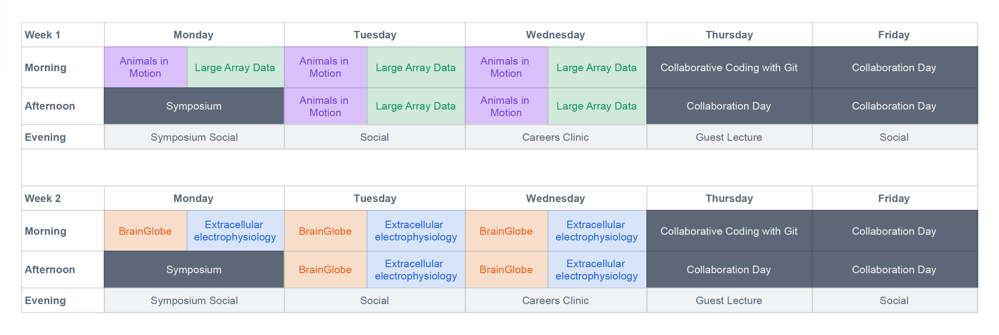
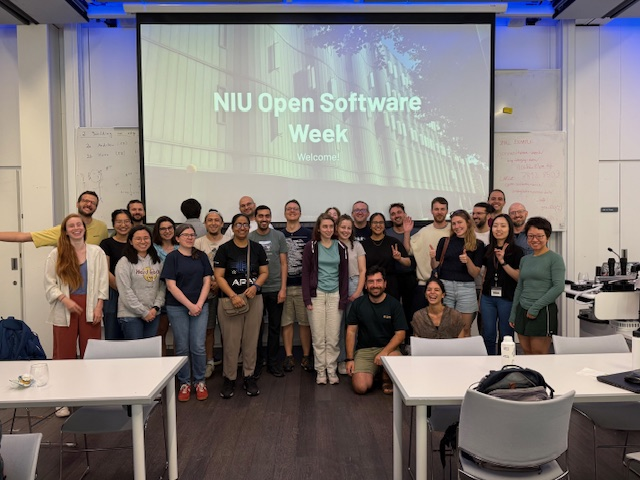

Open Software Summer School#
We are excited to announce the second NIU Open Software Summer School, taking place in August 2026 at the Sainsbury Wellcome Centre in London, UK. This event will bring together researchers, developers, and users of open-source software for some hands-on training, community-building and hacking.
The 2025 event (known as Open Software Week) brought together 44 attendees from 12 countries to learn about open-source approaches for handling large images, processing microscopy data and analysing video behavioural data. In 2026, we will return, with an expanded two-week program adding a new Extracellular Electrophysiology track, additional satellite events, guest lectures and opportunities for researchers to present their own work.
Application
To apply for OSSS, please complete this form. Application questions can be found here.
If you have any questions, please ask on our Zulip chat. Alternatively, please email Adam Tyson.
Schedule#

There are four tracks targeted to different audiences. We encourage you to read each track’s description and choose the one(s) that best fits your interests.
Use open-source tools to track and analyse animal motion from video footage.
Learn about strategies and use open source tools to process large array data (e.g. imaging, videos, electrophysiology,…)
Use the BrainGlobe ecosystem of computational neuroanatomy tools to analyse whole-brain microscopy datasets.
Using open source tools to process and analyse large extracellular electrophysiology data (e.g. from silicon probes)
Registration
You may register for week 1, week 2 or both. However, you can only register for one track per week, i.e:
Week 1: either Animals in Motion or Large Array Data.
Week 2: either BrainGlobe or Extracellular Electrophysiology.
Key Dates#
Date |
Event |
|---|---|
December 1st 2025 |
Applications open |
January 31st 2026 |
Applications close |
March 2026 |
Applicants are notified of acceptance |
July 2026 |
Optional preparatory month begins |
August 17-21 2026 |
Week 1: Animals in Motion & Large Array Data |
August 24-28 2026 |
Week 2: BrainGlobe & Extracellular Electrophysiology |
Symposium#
On the first day of each track (Monday afternoon), there will be a symposium, shared with participants of the other track held that week. All attendees will be expected to present a poster describing their past, present or planned work.
Preparatory month#
All four tracks require a basic knowledge of scientific Python programming. If you don’t have this background, that’s totally fine, we will be running an asynchronous preparatory course in the month before the summer school. Training materials and exercises will be shared with participants, and OSSS instructors will be available to answer any questions.
This preparatory course is mandatory for those without Python experience, and requires a minimum of four hours per week commitment for four weeks prior to the summer school
Fees#
Academic or self funding: £300 per week
Industry: £600 per week
Fees include all materials needed, and lunch/refreshments each day.
Financial Assistance#
A number of fee waivers will be available to applicants who would not otherwise be able to attend the summer school. A limited number of travel stipends will also be available, but we encourage applicants to apply for independent travel funding.
Feedback from previous summer schools#
 Participants (having a great time) at the hackathon in 2025
Selected quotes from previous attendees#
Sparked a bit of a eureka moment after months of agonising over how to analyse my data!
Thank you again for organizing this amazing event
My whole PhD feels doable now!
The heterogeneity of the attendees was truly enriching.
Atmosphere was very friendly and down to earth.